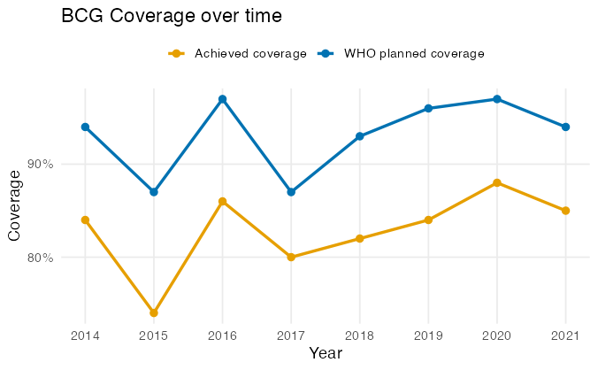
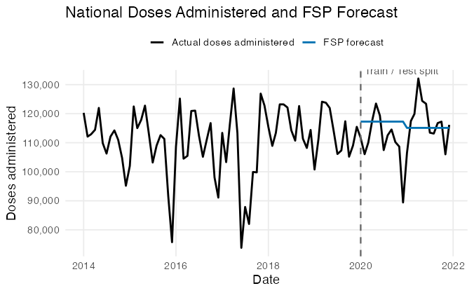
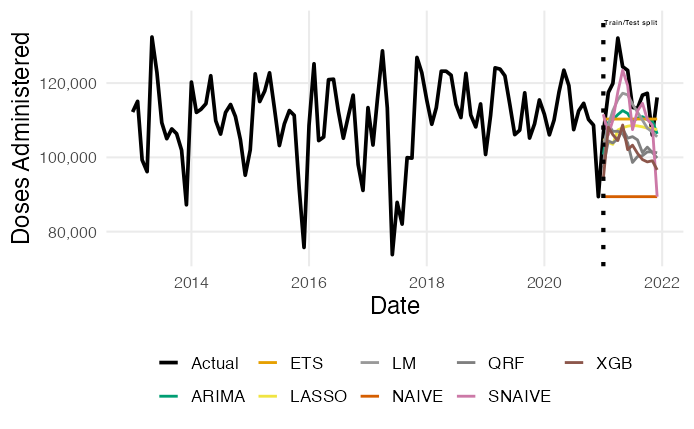
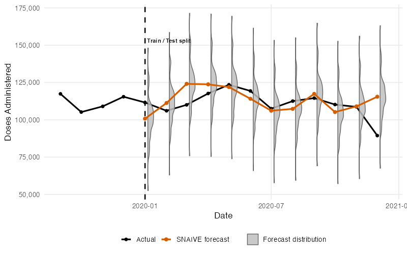
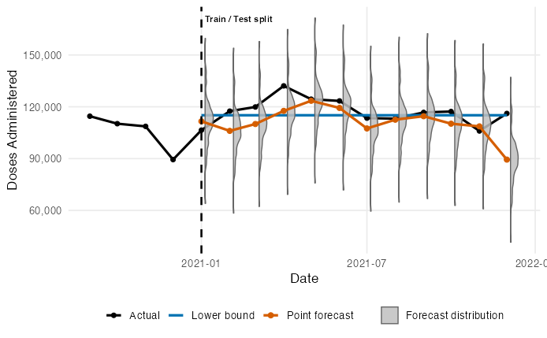
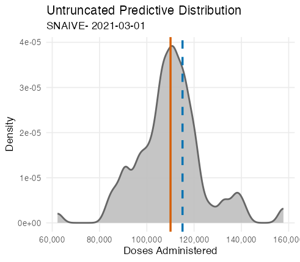
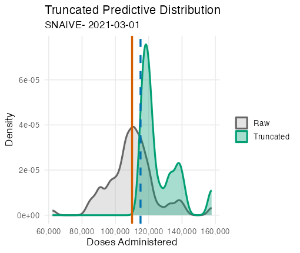
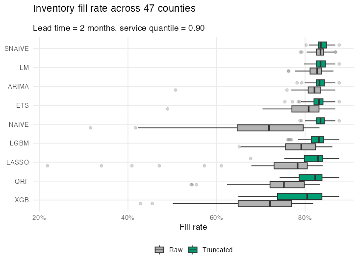
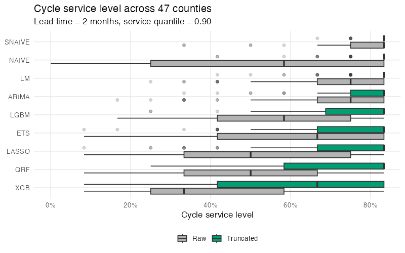

| Model class | Models |
|---|---|
| Classical statistical | ETS, ARIMA, Naïve, Seasonal Naïve |
| Regression-based | Linear regression, LASSO |
| Machine learning | Quantile Random Forest, XGBoost, LightGBM |
Distributional Post-Processing for Vaccine Demand Inventory Forecasting
Udeshi Salgado, DL4SG, Cardiff University, UK
Lead Supervisor: Professor Bahman Rostami-Tabar
Co-supervisors: Dr Thanos E Goltsos, Dr Geraint Palmer, Dr Xun Wang
13 March 2026
Background
1 in 5 children worldwide still lack access to essential vaccines.
A key operational contributor is inefficiency in vaccine supply chains.
In low- and middle-income countries, these inefficiencies often involve:
- inaccurate demand forecasts
- inventory decisions made under limited uncertainty information
- wastage and stockouts
The Immunisation Supply Chain

BCG (Bacille Calmette-Guérin) Vaccines

Vial

Dose
Administered
Outline
- Problem Statement and Motivation
- Decision-Relevant Forecasting under Uncertainty
- Forecasting Framework
- Distributional Post-Processing and Inventory Decision Model
- Results
The Problem: Evidence from the Study Setting

- Coverage shown here refers to BCG vaccination coverage among newborns
- BCG is a single-dose vaccine administered at birth
- Coverage is defined as:
\[ \text{Coverage} = \frac{\text{No of Clients Administered}}{\text{Target Population}} \]
- Forecasting limitations may contribute to persistent coverage gaps.
Current Forecasting Practice
In practice, vaccine planning often relies on the Forecasting, Supply planning, and Procurement (FSP) Tool.
The FSP workflow combines three point-based planning components:
- Demographic-based: based on demographic estimates and who static wastage and coverage rates
- Consumption / issue-based: previous year doses administred adjusted for stockout and reporting rate
- Session-based: 100% expert-driven planning for upcoming vaccination sessions
These approaches typically produce point estimates, with limited representation of uncertainty.
The FSP Forecasting

Forecast equation for doses administered:
\[ \hat{D_t} = \frac{P_y \cdot C_y}{12} \]
Where:
- \(\hat{D_t}\): Forecasted doses administered at month \(t\)
- \(P_t\): Target population at year \(y\)
- \(C_t\): WHO target coverage at year \(y\)
Methodological Limitations
- In practice, vaccine planning often relies on point-based demographic planning models, limiting responsiveness to observed consumption patterns.
- Forecasting workflows still emphasise point predictions, which do not capture uncertainty needed for operational decision-making.
- Models trained on historical administered doses may understate true need when past delivery is supply-constrained.
Outline
- Problem Statement and Motivation
- Decision-Relevant Forecasting under Uncertainty
- Forecasting Framework
- Distributional Post-Processing and Inventory Decision Model
- Results
The Risk of Point Forecasting

Addressing the Uncertainty

Distributional Post-Processing: Defining Lower Bound

We define lower bound as the FSP forecast:
\[ \text{Lower Bound} = \frac{P_y \cdot C_y}{12} \]
Where:
- \(P_t\): Target population at year \(y\)
- \(C_t\): WHO target coverage at year \(y\)
Distributional Post-Processing: Truncation


Outline
- Problem Statement and Motivation
- Decision-Relevant Forecasting under Uncertainty
- Forecasting Framework
- Distributional Post-Processing and Inventory Decision Model
- Results
Forecasting Framework
Data Setting
- BCG doses administered from a LMIC country
- Monthly data from Jan 2013 - Dec 2021
- Hierachical Level: County Level (47 counties)
- 48 time series in total (47 counties + national)
Forecasting Setup
Target variable: monthly BCG doses administsered
Let \(y_{i,t}\) denote administered doses
in county \(i\) at month \(t\).
For forecast origin \(T\), predict:
\[ \{y_{i,T+1}, \dots, y_{i,T+H}\}, \quad H = 12 \]
Forecasting Models
- Each model produces multi-step point forecasts \(\hat{y}_{i,T+h|T}\).
- Predictive distributions are obtained via blocked bootstrap residual simulation.
Outline
- Problem Statement and Motivation
- Decision-Relevant Forecasting under Uncertainty
- Forecasting Framework
- Distributional Post-Processing and Inventory Decision Model
- Results
Distributional Post-Processing
Raw predictive distribution
Let the predictive distribution at horizon \(h\) be
\[ p_h(y) = \Pr(Y_{T+h} = y). \]
In practice, this is approximated using blocked bootstrap residual simulation:
\[ \{y^{(1)}_{T+h},\dots,y^{(R)}_{T+h}\}. \]
Target coverage lower bound
We impose a planning-based (FSP benchmark target) lower bound:
\[ L_{T+h} = \frac{P_y \cdot C_y}{12}, \]
where \(P_y\) is the target population and \(C_y\) is WHO target coverage for year \(y\).
Conceptual truncation
The predictive distribution is truncated as:
\[ p_h^{\text{tr}}(y)= \begin{cases} p_h(y), & y \ge L_{T+h},\\ 0, & y < L_{T+h}. \end{cases} \]
and renormalized:
\[ \tilde{p}_h(y) = \frac{p_h^{\text{tr}}(y)} {\sum_{z \ge L_{T+h}} p_h(z)}. \]
- \(p_h(y)\): raw predictive distribution at horizon \(h\)
- \(L_{T+h}\): lower bound from target population and coverage
- \(\tilde{p}_h(y)\): adjusted predictive distribution
Implementation (simulation)
In practice, truncation is applied to simulated draws:
\[ y^{(r),\text{tr}}_{T+h} = \begin{cases} y^{(r)}_{T+h}, & y^{(r)}_{T+h} \ge L_{T+h},\\ \text{resample from feasible draws}, & \text{otherwise}. \end{cases} \]
- \(r=1,\dots,R\): simulation draw
- Renormalization occurs implicitly through resampling.
Inventory Decision Model
Policy
- Periodic-review order-up-to policy
- Inventory reviewed monthly
- At each review, inventory position is raised to target level (S_t)
\[ S_t = Q_{\alpha}(D_t^L) \]
- \(Q_{\alpha}(\cdot)\): \(\alpha\)-quantile of predictive lead-time demand
- Operationally, forecasts determine the replenishment target
Assumptions
- Missed vaccination opportunities (no backlog)
- Fixed lead time (L)
- Decisions based on predictive simulations
Lead-time demand
Demand occurring while orders are in transit:
\[ D_t^{L,(r)} = \sum_{j=t}^{t+L-1} y_j^{(r)} \]
where
- \(t\) = review period
- \(L\) = lead time (months)
- \(r = 1,\dots,R\) = simulation draw
- \(y_j^{(r)}\) = simulated demand
Performance evaluation
Service measures
\[ \text{Fill Rate} = \frac{\sum_{t=1}^{T} FD_t} {\sum_{t=1}^{T} D_t} \]
\[ \text{CSL} = 1 - \frac{N_{\text{stockout}}}{T} \]
Inventory Measures
\[ \text{Average on-hand} = \frac{1}{T}\sum_{t=1}^{T} I_t \]
\[ \text{Total unmet demand} = \sum_{t=1}^{T} (D_t - FD_t) \]
where
- \(D_t\) = demand in period \(t\)
- \(FD_t\) = fulfilled demand in period \(t\)
- \(T\) = total number of periods (in months)
- \(N_{\text{stockout}}\) = number of stockout periods (in months)
- \(I_t\) = on-hand inventory at end of period \(t\)
Outline
- Problem Statement and Motivation
- Decision-Relevant Forecasting under Uncertainty
- Forecasting Framework
- Distributional Post-Processing and Inventory Decision Model
- Results
Mean Inventory Performance Across Counties
| Inventory Performance Across Counties | ||||||||
|---|---|---|---|---|---|---|---|---|
| Mean across 47 counties, lead time = 2 months, service quantile = 0.90 | ||||||||
Fill rate
|
CSL
|
Avg on-hand
|
Unmet demand
|
|||||
| Raw | Trunc | Raw | Trunc | Raw | Trunc | Raw | Trunc | |
| ARIMA | 82.1% | 83.4% | 68.9% | 78.5% | 567 | 1,036 | 5,142 | 4,855 |
| ETS | 80.8% | 82.9% | 59.8% | 73.2% | 453 | 838 | 5,552 | 5,033 |
| LASSO | 76.1% | 82.5% | 51.4% | 71.8% | 428 | 840 | 6,774 | 5,212 |
| LGBM | 79.9% | 82.9% | 56.4% | 75.2% | 434 | 909 | 5,740 | 5,027 |
| LM | 82.7% | 83.5% | 71.0% | 80.1% | 611 | 1,075 | 5,000 | 4,814 |
| NAIVE | 76.1% | 83.6% | 54.2% | 80.6% | 571 | 1,542 | 6,685 | 4,802 |
| QRF | 77.8% | 82.0% | 49.7% | 69.6% | 366 | 748 | 6,241 | 5,269 |
| SNAIVE | 83.4% | 83.8% | 78.6% | 82.5% | 972 | 1,542 | 4,838 | 4,730 |
| XGB | 74.5% | 80.0% | 42.0% | 59.4% | 291 | 596 | 7,080 | 5,906 |
Median Inventory Performance Across Counties
| Inventory Performance Across Counties | ||||||||
|---|---|---|---|---|---|---|---|---|
| Median across 47 counties, lead time = 2 months, service quantile = 0.90 | ||||||||
Fill rate
|
CSL
|
Avg on-hand
|
Unmet demand
|
|||||
| Raw | Trunc | Raw | Trunc | Raw | Trunc | Raw | Trunc | |
| ARIMA | 82.9% | 83.5% | 75.0% | 83.3% | 428 | 977 | 4,409 | 4,074 |
| ETS | 82.4% | 83.4% | 66.7% | 83.3% | 341 | 762 | 4,824 | 4,068 |
| LASSO | 80.8% | 83.2% | 50.0% | 83.3% | 298 | 732 | 5,363 | 4,198 |
| LGBM | 81.7% | 83.3% | 58.3% | 83.3% | 315 | 798 | 4,988 | 3,990 |
| LM | 83.1% | 83.5% | 75.0% | 83.3% | 463 | 932 | 4,225 | 3,985 |
| NAIVE | 81.4% | 83.5% | 58.3% | 83.3% | 303 | 1,152 | 5,322 | 3,985 |
| QRF | 80.5% | 82.8% | 50.0% | 83.3% | 267 | 636 | 5,178 | 4,447 |
| SNAIVE | 83.4% | 83.6% | 83.3% | 83.3% | 835 | 1,369 | 3,985 | 3,985 |
| XGB | 77.7% | 82.4% | 33.3% | 66.7% | 199 | 409 | 6,075 | 4,481 |


Connect
Udeshi Salgado
2nd year PhD Student
DL4SG, Cardiff University, UK
LinkedIn: udeshi-salgado
Slides:

Outline of my talk
- Problem Statement and Motivation
- Decision-Relevant Forecasting under Uncertainty
- Forecasting Framework
- Distributional Post-Processing and Inventory Decision Model
- Results
© 2025 Udeshi Salgado – IIF UK Chapter, Cardiff